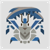
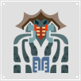

Bulldrome
(野猪王)

Velocidrome
(蓝速龙王)

Yian Kut-Ku
(大怪鸟)

Gendrome
(黄速龙王)

Baelidae
(鬼狩蛛)

Yellow Caeserber
(沙狸兽)

Congalala
(桃毛兽王)

Chramine
(沙雷鸟)

Cephadrome
(沙龙王)

Daimyo Hermitaur
(大名盾蟹)

Blue Yian Kut-Ku
(青怪鸟)

Khezu
(电龙)

Basarios
(岩龙)

Gold Congalala
(金毛兽王)

Dread Baelidae
(骇狩蛛)

Purple Gypceros
(紫毒鸟)
Shogun Ceanataur
(将军镰蟹)

Blangonga
(雪狮子王)

Estrellian
(星龙)

Ice Chramine
(冰雷鸟)

Silver Hypnocatrice
(银眠鸟)

Akura Vashimu
(尾晶蝎)

Yian Garuga
(黑狼鸟)

Monoblos
(一角龙)

Rathian
(雌火龙)

Iodrome
(红速龙王)

Giadrome
(白速龙王)
Swordmaster Shogun Ceanataur
(剑豪镰蟹)
Crystal Basarios
(晶岩龙)
One-Eared Yian Garuga
(独耳黑狼鸟)
Conflagration Rathian
(烈焰女王)
Shattered Monoblos
(断刃一角龙)

Shen Gaoren
(砦蟹)

Tigrex
(轰龙)

Red Shen Gaoren
(红莲砦蟹)
Rock Shen Gaoren
(铠岩砦蟹)

Slicemargl
(剑极狼)